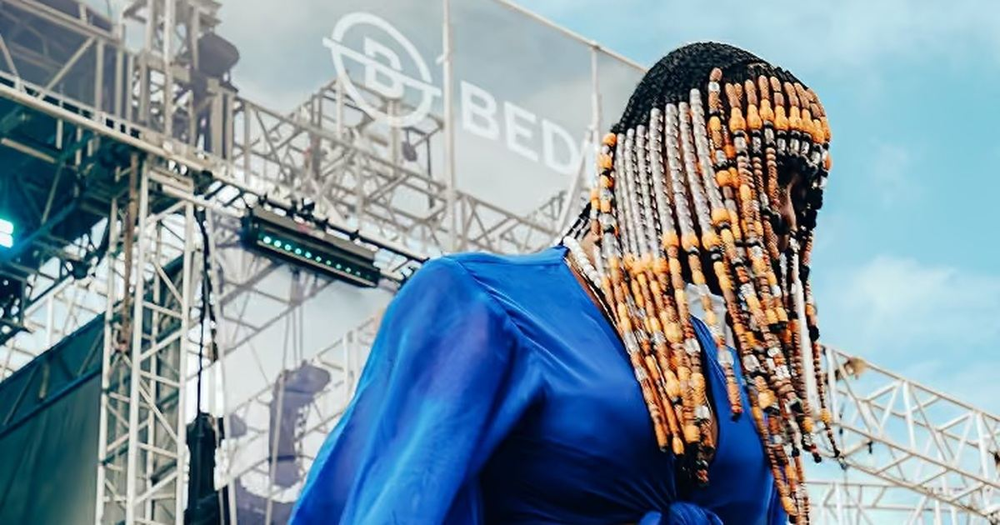

Festivals · Music
AfroFuture Residency 2026
- Dates
- –
- Venue
- Future Club, 1 Shiashie
- Location
- Accra, Ghana
- Format
- In-person
- Category
- Music
- Industry
- Music festival / residency
- Organiser
- AfroFuture
- Price
- Single-night early-bird tickets from GHS 100 (some nights from GHS 200 or 300; New Year’s Eve from GHS 780). Founding membership GHS 4,100 (about US$350) covers every December night plus Future Club access through 2027.
- Official website
- https://www.afrofuture.com/futureclub
About
Official 9 Nov 2026 announcement: the 2026 AfroFuture festival will not take place at El Wak Stadium. In its place, Future Club opens at 1 Shiashie, Accra, on Wednesday 16 December 2026 with the AfroFuture Residency through New Year’s Eve (31 December, 8:00pm–3:00am). Official events page lists residency concerts including Amapiano & Brunch (20 Dec), Rcee Live (22 Dec), Sincerely Accra Live (23 Dec), Afropolitan Live (27 Dec), Victony: The Bonfire Experience (28 Dec), Young Jonn Live (29 Dec) and the New Year’s Eve Party (31 Dec). Official copy describes standalone 3,000-capacity concerts; that is a venue capacity, not a published headcount, so attendance is estimated. The El Wak stadium festival is scheduled to return in December 2027 as a separate edition. Ghana dates are local (Greenwich Mean Time, GMT, Africa/Accra, UTC+0, no daylight saving).
Topics: Afrobeats, Amapiano, live concerts, Detty December.
No organiser attendance figure found on the official pages checked (24 Nov 2026). Ranked by an estimated size tier 'medium' (our judgement from format, venue and scale, not an official number).